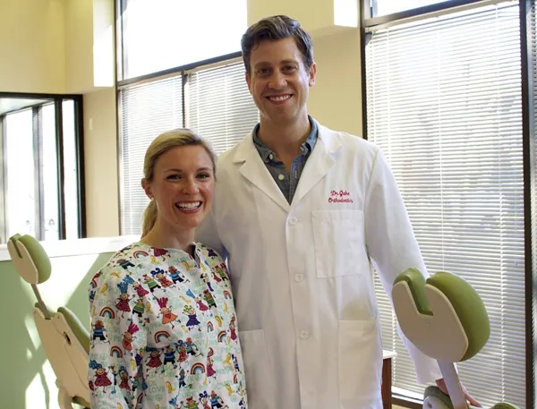
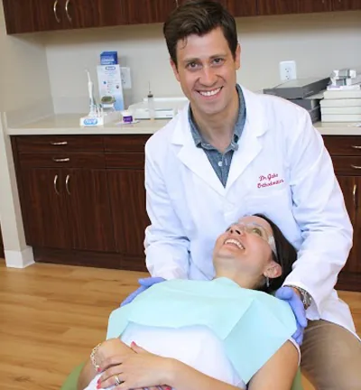
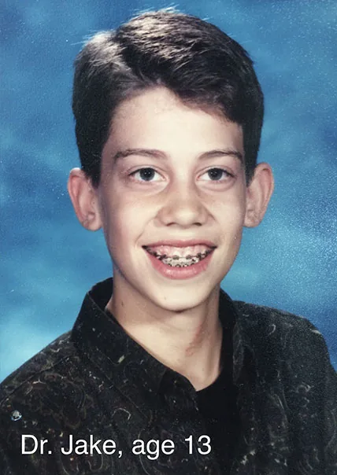
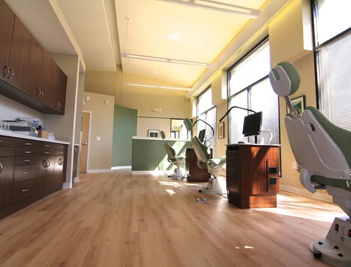

Meet the pediatric dentist and orthodontist at Top of the Hill
Dr. Abbey and Dr. Jake are a husband-and-wife team who met at Temple University School of Dentistry. Together they run one office in Chestnut Hill.
- Pediatric dentistry
- Dr. Abbey, DMD
- Orthodontics
- Dr. Jake, DMD, MS
- Team
- Ten people
From current website Biographies are condensed from the practice's website and need practice approval before launch.

Dr. Abbey Sullivan Orozco. Pediatric dentist, DMD.

Dr. Abbey, pediatric dentist

Dr. Abbey, age 11
She attended the University of Notre Dame and earned her dental degree at Temple University School of Dentistry, then completed her pediatric dental residency at Temple University Hospital/Episcopal Division. She grew up in Scranton, PA.
- Diplomate, American Board of Pediatric Dentistry, with annual recertification
- Member, American Academy of Pediatric Dentistry and American Dental Association
- Omicron Kappa Upsilon, National Dental Honor Society, inducted 2007
For anxious and special-needs patients, the practice states she offers nitrous oxide analgesia, conscious sedation and, where necessary, general anesthesia in a hospital setting.
From current website Pending practice review Stated on the practice's website; not independently verified. Confirm with the practice and the relevant boards before publishing. The age-11 caption is printed on the photograph.
Dr. Jacob Orozco. Orthodontist, DMD, MS.

Dr. Jake, orthodontist

Dr. Jake, age 13
He grew up in northwestern Pennsylvania, graduated from The Ohio State University, and received his dental degree at Temple University School of Dentistry. He then completed specialty training in orthodontics and a master's degree in oral biology. His research at Temple won the David C. Hamilton research award from the Pennsylvania Association of Orthodontists.
- Member, American Association of Orthodontists and American Dental Association
- Member, Middle Atlantic Society of Orthodontists and Greater Philadelphia Society of Orthodontists
- The practice is a certified Invisalign Teen® provider
From current website Pending practice review Stated on the practice's website; not independently verified.
The team. Ten people besides the doctors.
- AnastasiaOrthodontic Treatment Coordinator
- MaireadPediatric Dental Financial/Insurance Coordinator
- LeydiFront Desk/Scheduling Coordinator
- AvaDaehFront Desk/Scheduling Coordinator
- JessicaLead Orthodontic Assistant
- HaleyOrthodontic Assistant
- BenClinical Dental Assistant
- SamClinical Assistant
- James, R.D.H.Dental Hygienist
- AhmaniEFDA
From current website Pending practice review Names and roles as listed on the practice's team page. Confirm current staffing and permission to publish names.

What sets the practice apart
Dr. Abbey explains each procedure in kid-friendly terms, and Dr. Jake takes the time to learn his patients' names and news, from sports and music to the prom.